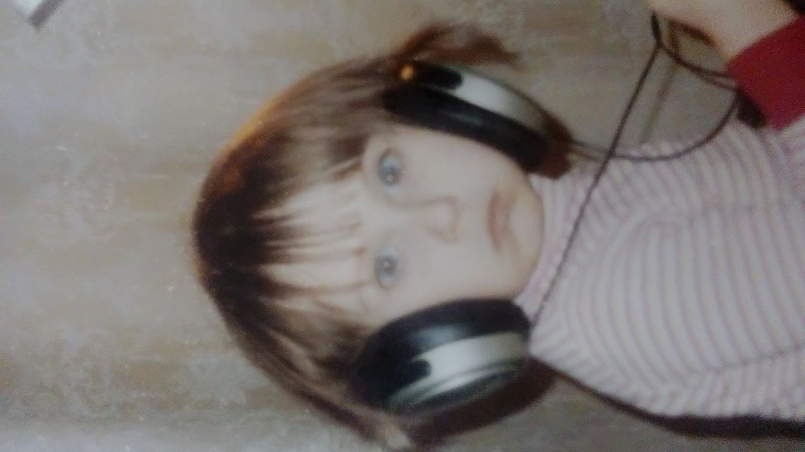

Nazywam się Angelika Fedorowicz i studiuje filologię polską na Uniwersytecie w Siedlcach.
Chcę na tej stronie pokazać co mnie interesuje i kim jestem :D
Jestem osobą, która ma wiele zainteresowań, ale nic nie zajmuje szczególnego miejsca w moim sercu. Moim większym zainteresowaniem cieszą się gry komputerowe. Szczególnie gry online. Uwielbiam również oglądać seriale typu anime. Szczególnie uwielbiam "Jojo's Bizarre Adwenture" oraz "Naruto". Swego czasu interesowałam się również rysunkiem i tworzeniem własnych postaci.
| Kategoria | Opis |
|---|---|
| Rodzina | Mieszkam z rodzicami i babcią, ale mam też starszego brata. |
| Zainteresowania | Lubię grać w gry komputerowe, czytać książki, układać puzzle, oglądać seriale |